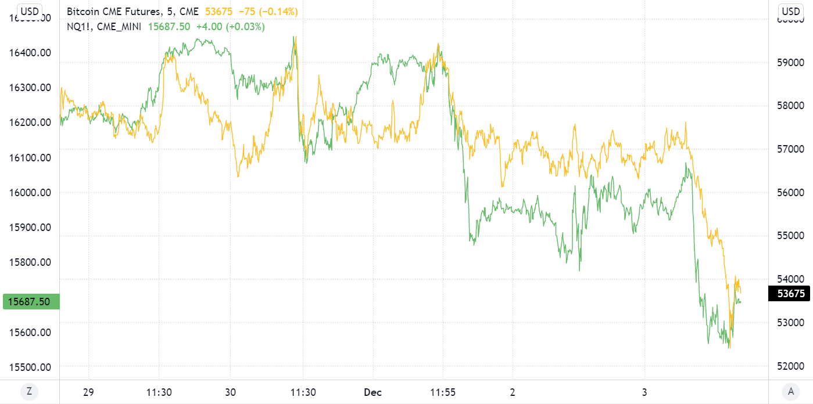
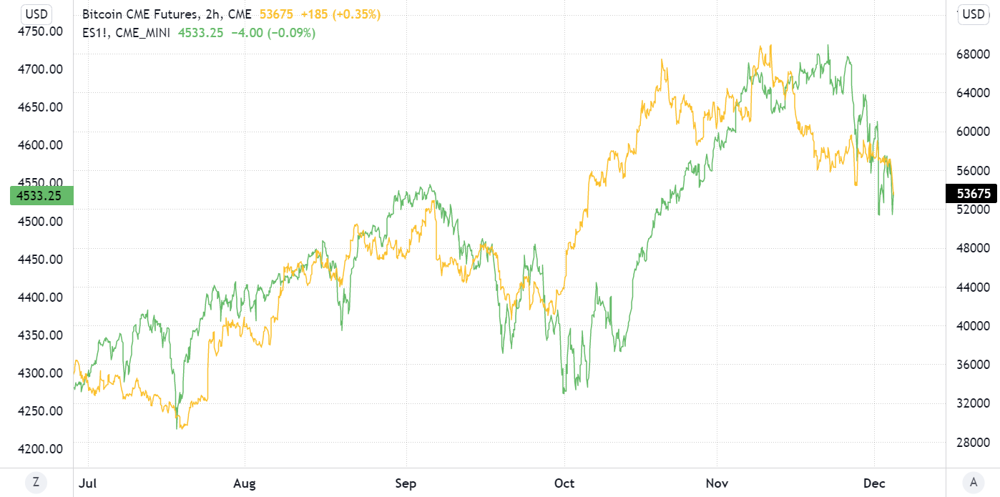
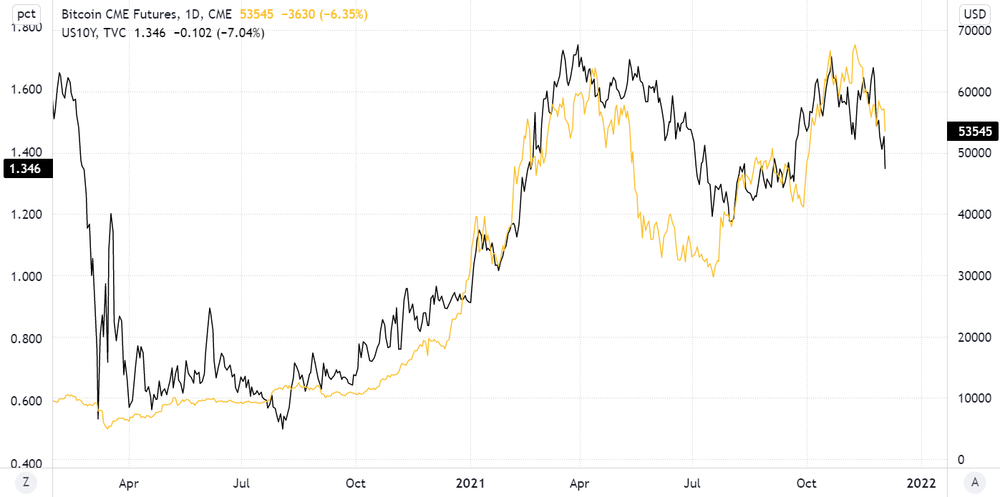
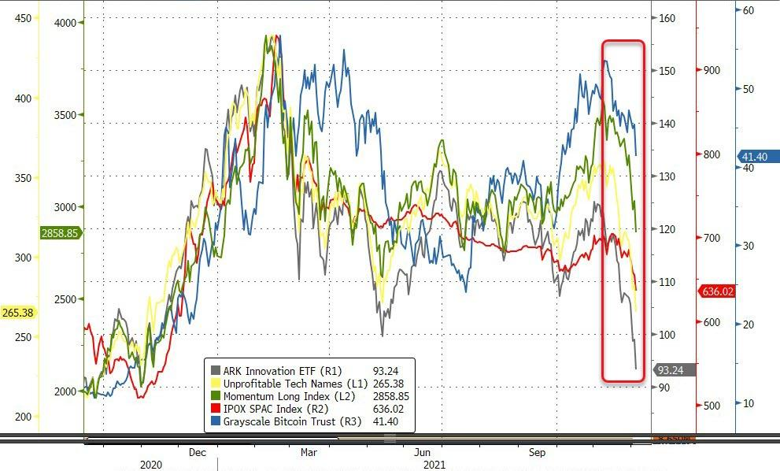

December 4th, 2021 11:45am
If there was still anyone left shouting that Bitcoin is an uncorrelated asset they were put to rest in recent days. And what was once confined to obscure corners of the internet has obviously left them a long time ago, but it truly feels like this was the week that cranked things to 100...
In moments of major stress Bitcoin has followed risk assets for years - hardly much of a 'digital gold' but crisis is crisis, and recall during the March 2020 puke that even the precious metal was dumped indiscriminately alongside bonds and everything else as confused traders and algos were either forced or scared into dumping it all for cash. There is a saying that in real volatility “all correlations go to 1."
What is more concerning is the strengthening connection between Bitcoin (and thus Ethereum, and thus altcoins) and greater financial assets when equities are 3% off all time highs. This speaks to either 1) a greater integration of Bitcoin into the wider risk-on/risk-off framework that both traders and computers are programmed to buy or sell out of depending on mostly whether or not rate hike expectations are up that day, 2) a market that is under increasing stress despite being just off all time highs and up 23% YTD, or 3) both…
Of course nothing is really as simple as just risk-on or risk-off, and Bitcoin, on top of being long beta / long momentum, is a great beneficiary of inflation both realized and expected.
That’s certainly one of the reasons why it’s up 160% over the past year (at this point anyone not living under a rock knows that no doubt about it - this is the highest inflation the U.S. has seen in 50 years). Even Powell ditched ‘transitory’…
AND a third factor in Bitcoin’s favor may be establishment distrust, which is obviously higher following two years of Americans being told their lives are now vastly different because the bat coronavirus that first emerged blocks away from an NIH-funded lab that studied bat coronaviruses actually was just an unfortunate development in a cave somewhere. BofA has dubbed it an “anarchy hedge” - record wealth inequality and soaring inflation seem to set the stage for taking out some insurance.
So since the three things that drive bond yields higher are conveniently risk-on, higher inflation expectations, and higher credit risk, it’s no surprise that Bitcoin trades even tighter alongside the 10 year:
Which begs the question of why not just go short the 10 year in size and avoid the regulatory and custody risks that come with holding crypto? If this trend holds for another year, that’ll be a question many are hoping you don’t ask. But for the average person buying Bitcoin is easier than short selling bonds - and in a market where passive > active flows and retail is a prominent force that may be all it takes for the coin to remain in fashion.
Recent developments are undoubtedly a thorn in the side of the once-isolated crypto trading community, filled with many who after spending years mastering their specific market are now essentially in competition with firms backed by billions in capex and decades of experience. Because unless it’s also a coincidence that Tesla and Bitcoin have hit their high or low for the month on the same day 8 out of the last 15 months, it really appears that Bitcoin trades only as a composite of long ‘the next big thing’ FOMO and short U.S debt. There’s nothing wrong with that - the trade has done well. But it’s a slap in the face to the uncorrelated/digital gold/reserve asset narrative. And it’s a major blow to those who were looking for an ‘alternative’ investment. Increasing correlation with bonds and equities is the biggest threat to Bitcoin right now.
It’s possible and maybe even likely that this is temporary - but whatever needs to happen for Bitcoin to again decouple from greater markets hasn’t happened yet. In light of the past two weeks, can anybody seriously say right now that they think Bitcoin will end the year higher than where it is currently if the S&P 500 doesn't?
But to be fair, long term hodlers happy with positive yet more tame returns don't really have anything to worry about since if the world post-GFC is any guide, the current pullback in equities will bottom out soon and if it doesn’t - the Fed will just announce a pause in their tapering plans and at that point everyone should go even more all in because rest assured it will give way to new all time highs for the Nasdaq, home prices, inequality, and the newest member of the liquidity-firehose winners club, Bitcoin.